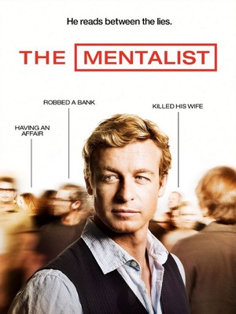

2008
Chris Long
43 minutos por episódio
TV-14
Drama policial, Investigação criminal, Mistério e Suspense psicológico
Estados Unidos
O Mentalista é uma série policial e de suspense que acompanha Patrick Jane, um ex-golpista que finge ser médio e que usa suas habilidades extraordinárias de observação e dedução para ajudar a CBI (Agência de Investigação da Califórnia) a resolver crimes. Seu objetivo principal é capturar Red John, o serial killer que assassinou sua esposa e sua filha.